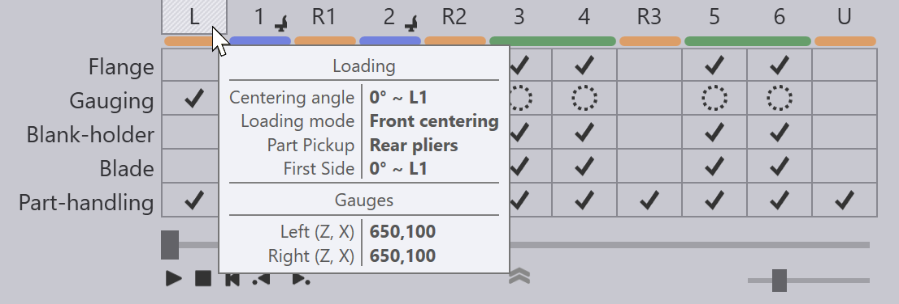
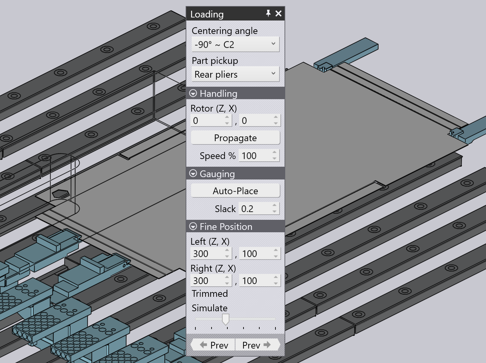
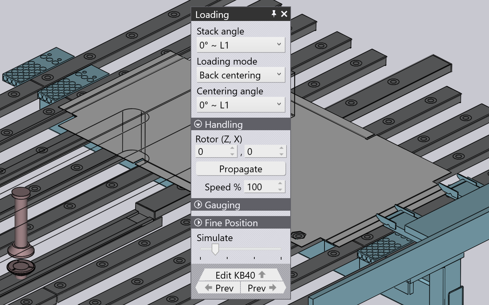
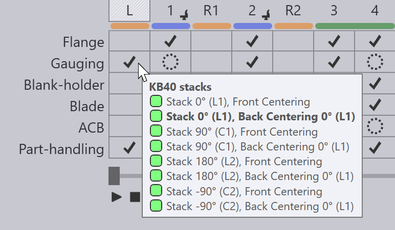
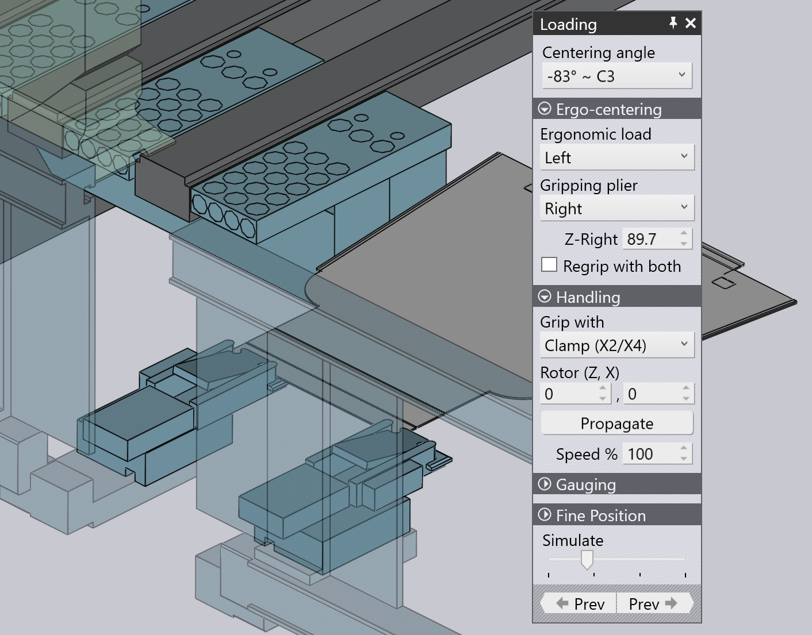

Úprava zakládání
Operaci zakládání pro automatický stroj s výkyvným ohýbáním (jako TBC-7030 nebo TBC-7020) lze upravit dvojitým kliknutím na buňku zakládání v navigátoru v horní části. Toto je buňka označená L. Prvním kliknutím vyberete operaci osazení a druhým kliknutím se zobrazí panel zakládání.

7030 (přední zakládání)
Panel Zakládání u stroje 7030 s předním zakládáním vypadá takto:

-
Nastavení Centering angle určuje orientaci dílu během centrování. Všimněte si, že se jedná o stranu směřující do stroje, a je tedy přesně opačná ke straně, která odkazuje na přední dorazy. V tomto příkladu je strana C2 otočena směrem ke stroji (a strana C1 v úhlu +90 stupňů se používá pro dorážení). Toto nastavení zobrazuje seznam orientací, které jsou vhodné pro počáteční centrování.
-
Volič Part Pickup umožňuje zvolit, zda bude díl uchopen pomocí vakuových přísavek nebo pomocí zadních kleští. (Toto se zobrazí pouze v případě, že jsou k dispozici obě možnosti. Některé díly budou příliš malé na to, aby je mohl uchopit upínač s přísavkami, a některé díly budou příliš velké na to, aby je mohly uchopit zadní kleště).
-
Posuvný regulátor Simulate ve spodní části lze použít k simulaci různých kroků počátečního procesu centrování.
Sekce Handling
Tato část nastavuje polohu otáčení a další možnosti manipulace během centrovacího cyklu.
-
Nastavení Rotor (Z, X) řídí polohu rotoru (poloha středu otáčení) a měří se vzhledem ke středu dílu v centrovací orientaci.
-
Kliknutím na Propagate použijte stejný střed otáčení pro zpracování všech stran. Obvykle se TecZone Fold pokusí optimalizovat středy otáčení tak, aby se minimalizoval počet požadovaných dvojitých rotací. Pokud však ručně upravíte střed otáčení pomocí výše uvedeného nastavení, můžete pomocí tohoto tlačítka provést další optimalizaci.
-
Nastavení Speed % ovládá rychlost otáčení (jako procento maximální možné rychlosti).[1]
Sekce Gauging
Tato skládací sekce vám umožňuje procházet různá umístění dorazů.
-
Nastavení Auto-Place lze použít k přepínání mezi různými umístěními dorazů. V závislosti na geometrii dílu může existovat více míst na okraji dílu, kde lze provést různé typy dorážení do rohů nebo zářezů. Opakovaným kliknutím na toto tlačítko se budete pohybovat mezi všemi těmito možnostmi. (Při tom si všimnete, že se aktualizují skutečné polohy dorazů v sekci Standby-poloha).
-
Nastavení Slack se používá k přidání další mezery (ve směru Z) mezi dorazy. Může být použito k usnadnění dorážení v případě dílů, které nemusí být přesně oříznuty na požadovanou velikost.
Sekce Fine Position
V této skládací sekci můžete ručně upravovat polohy dorazů. Obvykle by to mělo být nutné jen zřídka – ve většině případů je počáteční výběr polohy dorážení optimální. V jiných situacích by mělo stačit několik kliknutí na výše zmíněné tlačítko Auto Place k správnému umístění dorazů. Nastavení Fine Position jsou určena pouze pro vzácné případy nebo neobvyklé geometrie, kde TecZone Fold nemůže najít žádná řešení dorážení.
-
Nastavení Left (Z, X) vám umožní ovládat polohu levého dorazu. Poloha Z se měří od středové osy, zatímco poloha X se měří od okraje dílu ve směru X. Při úpravě tohoto nastavení se dorazy pohybují a může dojít ke kolizím nebo k chybám nezapojeného dorazu.
-
Nastavení Right (Z, X) vám umožní ovládat polohu pravého dorazu.
-
Indikace Oříznuto na displeji přepíná mezi Oříznuto, Neoříznuto nebo Diagonálně, aby označila typ dorážení, který je právě aktivní.
7030 + KB40 (přední / zadní zakládání)
U modelu 7030 vybaveného KB40 je během zakládání k dispozici více možností:

-
Pomocí tohoto nastavení Stack angle vyberte konkrétní orientaci dílu na paletě KB40. Poté můžete nastavit způsob zakládání (přední nebo zadní) a úhel vycentrování pro daný úhel stohu. NC program (XML) generovaný TecZone Fold má nastavení centrování pro každý z různých úhlů stohu začleněné. V závislosti na skutečném úhlu stohu se použije odpovídající nastavení. Můžete zkontrolovat všechny programované úhly stohu tak, že ukážete na buňku Dorážení:

-
Nastavení Loading mode slouží k výběru mezi režimy Zadní centrování a Přední centorvání.
-
Nastavení Centering angle se používá k výběru orientace dílu během počátečního centrování. Je-li způsob zakládání nastaven na přední centrování, pak je úhel centrování stejný jako úhel stohu (protože nedochází k žádné rotaci předtím, než je díl zatlačen proti předním dorazům). Je-li způsob zakládání nastaven na zadní centrování, pak je úhel centrování jeden z těchto:
-
Úhel stohu: díl je nejprve vycentrován a poté zatáhnut dozadu a otočen do počáteční orientace strany.
-
První boční úhel: díl se otočí do stejné orientace jako původní orientace strany před centrováním.
-
Sekce Handling, Gauging a ui:FinePosition[Fine Position] jsou podobné odpovídajícím sekcím z 7030 (viz sekce výše), s výjimkou toho, že se mohou vztahovat k polohám zadních nebo předních dorazů (v závislosti na nastavení způsobu zakládání).
7020 (Ergocentrování)
Na stroji s výkyvným ohýbáním 7020 nejsou žádné přední dorazy. Počáteční centrování se provádí proti zadním dorazům a panel vypadá takto:

Nastavení Centering Angle se používá k výběru orientace dílu během počátečního centrování. To se může lišit od orientace první strany – v tomto případě je díl vycentrován, poté stažen zpět a otočen před zpracováním první strany.
Sekce Ergo-Centering
Tato sekce slouží k výběru, zda je ergonomické centrování povoleno, a poté se používá k programování ergonomického centrování.
-
Pokud je nastavení Ergonomic load <Ne>, nedochází k ergonomickému centrování. Díl je naložen s dorazy uprostřed (v poloze pro zpracování). Pokud toto je nastaveno na Vlevo nebo Vpravo, pak je naprogramován cyklus ergonomického centrování.
-
Gripping plier vybere, které z obou kleští se použijí k uchopení dílu a jeho přitažení do středu (druhé kleště se použijí k referencování rohu dílu). Obvykle, pokud se ergonomické vycentrování odehrává na levé straně, používají se pravé kleště k uchopení a naopak.
-
Nastavení Z-Right (nebo Z-Left) ovládá polohu těchto kleští. Při posouvání podél dílu se poloha kleští v ose X automaticky upravuje tak, aby mohly uchopit přední hranu dílu.
-
Spínač Regrip with both lze použít k zajištění větší stability během přepravy dílu do středu stroje. Pokud je tato funkce zapnutá, pak se k uchopení okraje dílu při jeho vtahování do stroje používají také druhé kleště.
-
Nastavení Z-Regrip (zobrazeno pouze v případě, že je zapnutý spínač Přeuchopení oběma) nastavuje polohu druhých kleští při uchopení dílu.
Sekce Handling
Tato sekce je téměř stejná jako sekce věnovaná manipulaci pro stroj 7030.
-
Nastavení Grip with se používá k výběru, zda bude díl uchopen vakuovým manipulátorem (X3) nebo rotačními svorkami (X2/X4) během cyklu centrování.
-
Rotor (Z, X) je poloha rotační svorky (vzhledem ke středu dílu), když je díl přidržován/otáčen během cyklu centrování. Pokud je tato strana následně opracovávána pomocí rotační svorky (na základě výše uvedeného nastavení Upnout s), jedná se také o polohu, ve které svorka drží díl během bočního opracování.
Nastavení Gauging a Fine Position jsou podobná nastavením použitým pro model 7030 (viz výše uvedená sekce), s tím rozdílem, že nyní ovládají polohy dorazových palců namísto předních dorazů.